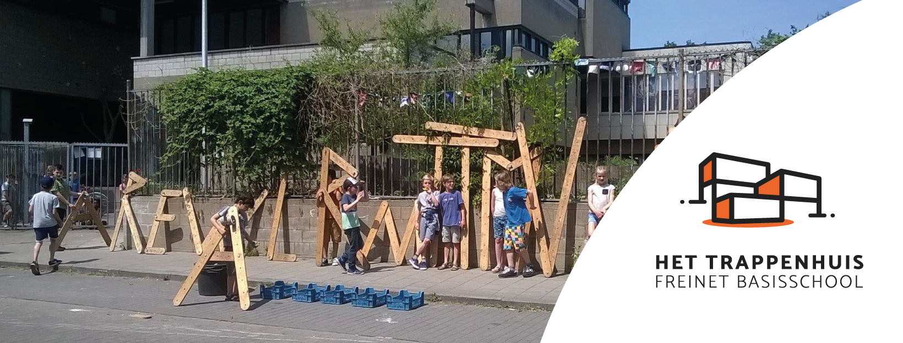
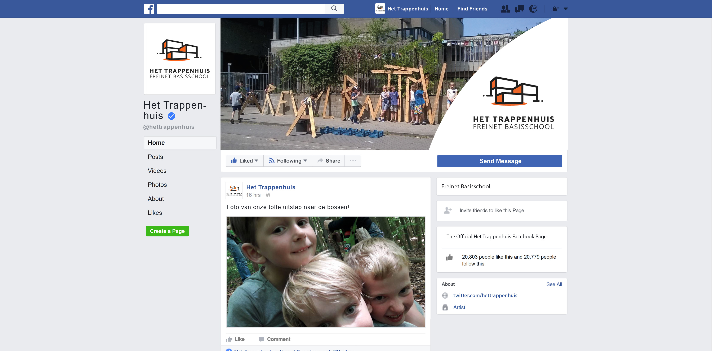
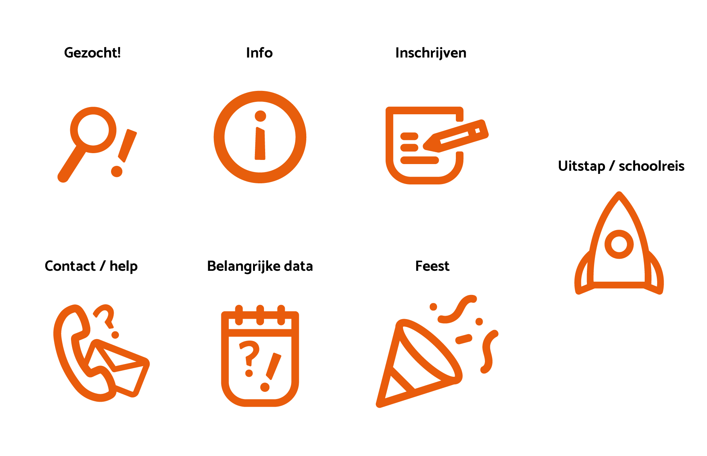

Sociale Media
Op de facebookpagina van Het Trappenhuis zullen wellicht vele foto's gepost worden. Voorbeelden van omslagfoto's die te gebruiken zijn, zijn hieronder te zien. De profielfoto die men moet gebruiken is ook hier te vinden. Het logo is altijd zichtbaar op beiden.

Fotografie
Fotografie is een belangrijk onderdeel van de huisstijl. Foto's zeggen soms meer dan woorden.
Een krachtig beeld maakt je drukwerk af. Daarnaast is ook de
kwaliteit van je beeld belangrijk. Voor een drukwerk moet een
beeld een resolutie hebben van 300 dpi.
Als je zelf geen geschikt beeld hebt voor een drukwerk, neem
dan eens een kijkje op www.unsplash.com of www.pexels.com.
Hier kan je gratis afbeeldingen downloaden en gebruiken.
Hier is een voorbeeld dat te vinden is op Pexels en Unsplash.

Iconen
De onderstaande iconen zijn gemaakt om teksten en informatie duidelijker te maken voor niet nederlands sprekende ouders.
